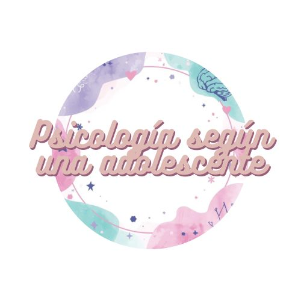

Amistades complicadas
Cuando ya no sabes si alguien sigue siendo tu amiga o solo una costumbre...
Entender lo que sentimos cuando nadie lo explica

Cuando ya no sabes si alguien sigue siendo tu amiga o solo una costumbre...
Pensar demasiado no es drama… es intentar entender lo que sentimos.
Cosas que nadie me dijo a tiempo, pero que ahora entiendo.